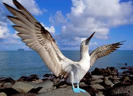

Islas Galápagos
Exploración de la biodiversidad única.

Exploración de la biodiversidad única.

Vida silvestre y ecosistemas de la región amazónica.

Paradisíacas playas y ricos ecosistemas marinos.

Exploración de la biodiversidad de las montañas y volcanes ecuatorianos.

Capacidad tecnológica para enviar personas a la Luna a salvo

Avances en la tecnología de vuelo espacial.